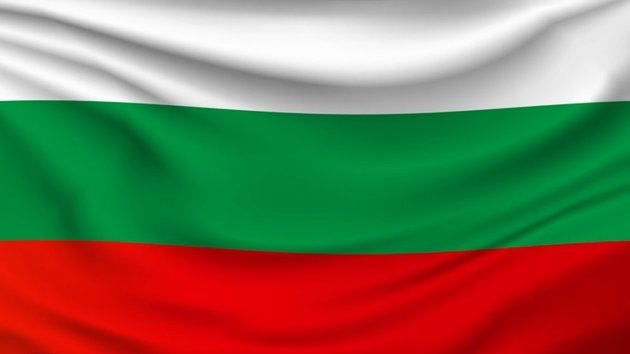
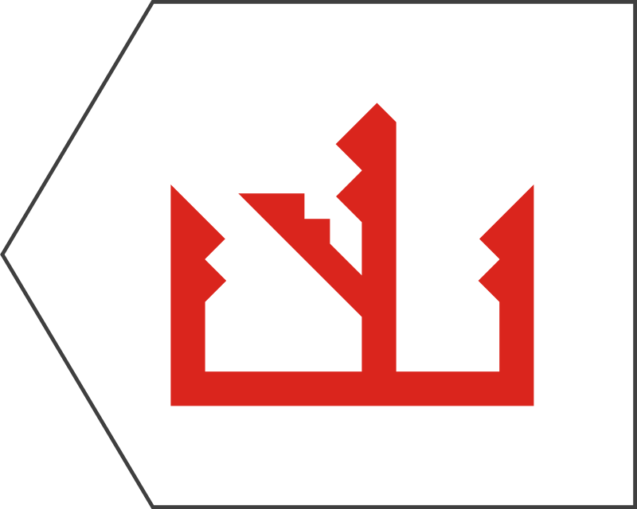
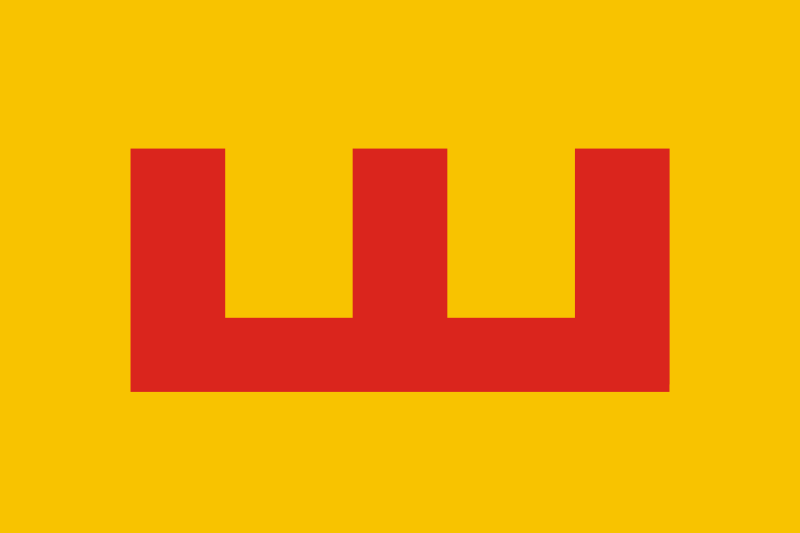
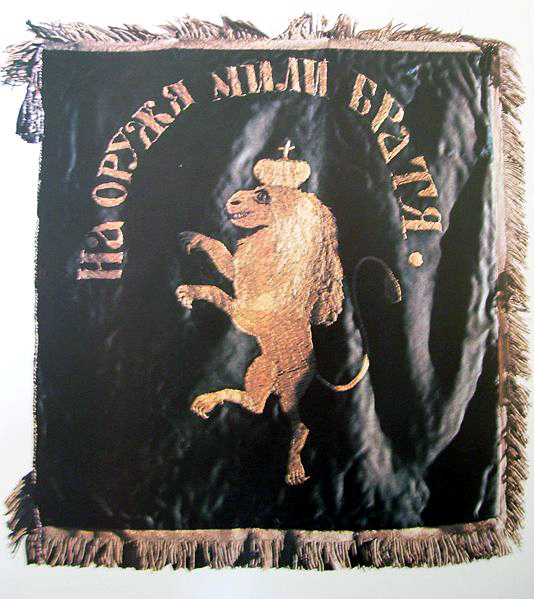
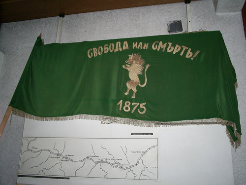
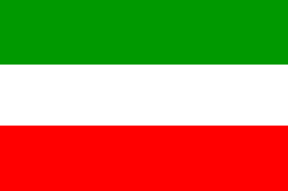
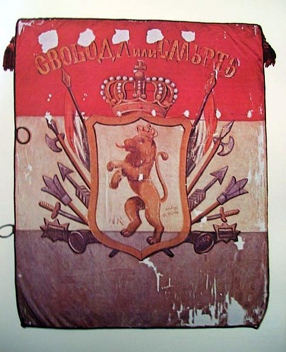
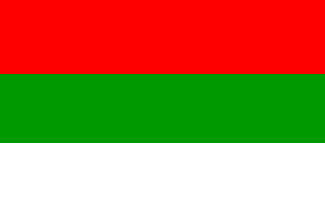
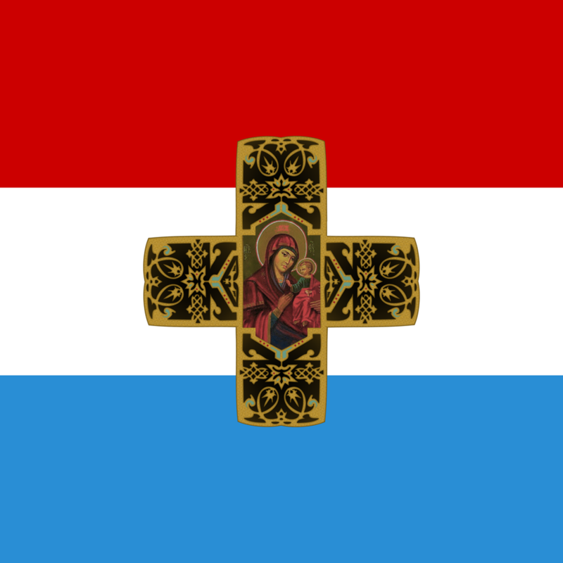

|  | ЗНАМЕ |
Националното знаме на България има правоъгълна форма и се състои от три цвята: бял, зелен и червен, разположени хоризонтално от горе надолу, като цветните полета са еднакви по форма и размери. От „Отговорите на папа Николай до българите“ разбираме, че преди приемането на Християнството българите са използвали конска опашка като военно знаме. След покръстването на България в България започват да се използват знамена, подобни на византийските. Но като цяло данните за българско знаме от времето на Първото и Второто българско царство са оскъдни. Първото знаме с цветовете зелено, бяло и червено, подредени в този ред хоризонтално, се използва през 1861 – 1862 г. от двете Български легии на Георги Раковски. По-късно четата на Филип Тотю носи знаме, в което трите цвята са в последователност червен, бял, зелен. Трицветно зелено, бяло и червено е и знамето на букурещкия БРЦК – подредбата на Раковски е може би под влияние на приятеля на Раковски Димитър Ценович, чиято дъщеря Любиша ушива двете знамена на комитета. Същото знаме носи и руско-българският доброволчески батальон в Сръбско-турската война от 1876. Знамето на Троянския комитет на ВРО от 1875 година е червено, зелено, бяло. Самарското знаме – основното знаме на Българското опълчение, носи трите панславянски цвята – червен, бял и син. Първите знамена, в които трите български цвята са в днешния порядък, са знамето на Старозогорските въстаници от 1875 г. и на Врачанския комитет от 1876 г. Върху избора на българско национално знаме оказва най-силно влияние знамето, ушито от дъщерята на Иван Параскевов – Стиляна Параскевова, в румънския град Браила и предадено на българските доброволци, участващи в Руско-турската война – второто известно опълченско знаме след Самарското. То е квадратно, с лъв и надпис „БЪЛГАРИЯ“ в средата. Това знаме днес е част от колекцията знамена на Националния военноисторически музей.
|  Знаме на Търновград от италианска карта, съставена от Анжелино Далорто през 1325 г. |
 Знаме на Второто българско царство (при Иван Шишман) от средновековна карта, съставена от Гилем Солер през 1380 г. |
|  Знаме на четата на Стефан Караджа. |
 Българско революционно знаме от Априлското въстание. |
 Знаме на Раковски, БРЦК и доброволците в Сръбско-турската война. |
 Знаме на четата на Филип Тотю. |
|  Знаме на Троянския комитет на ВРО. |
 Самарското знаме. |